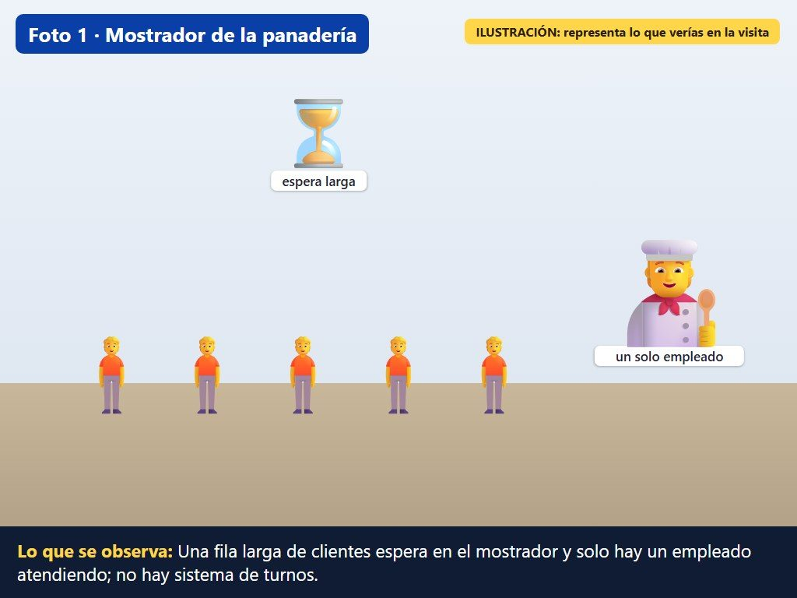
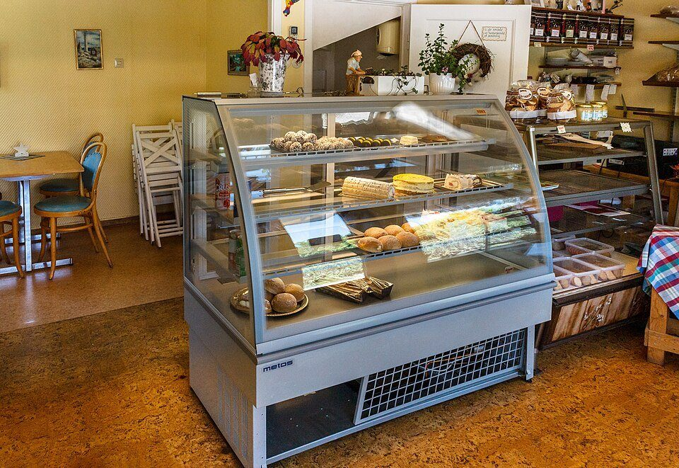
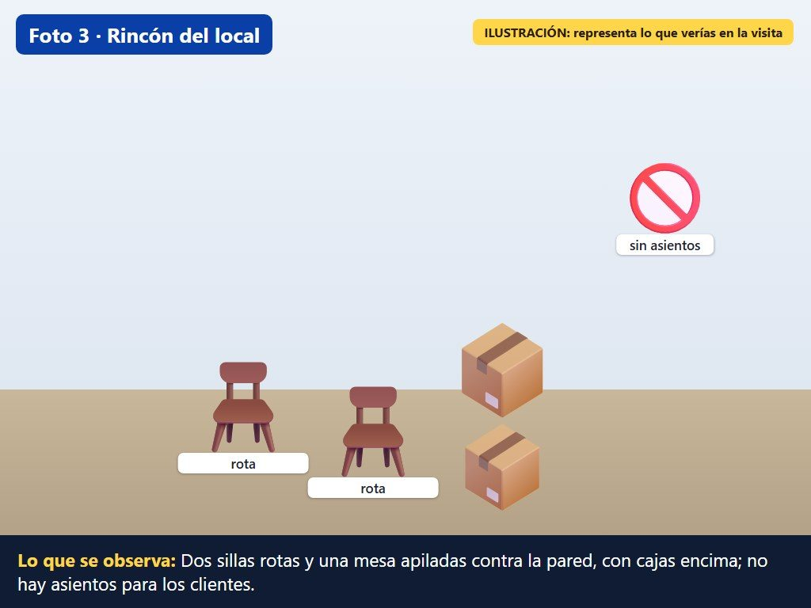
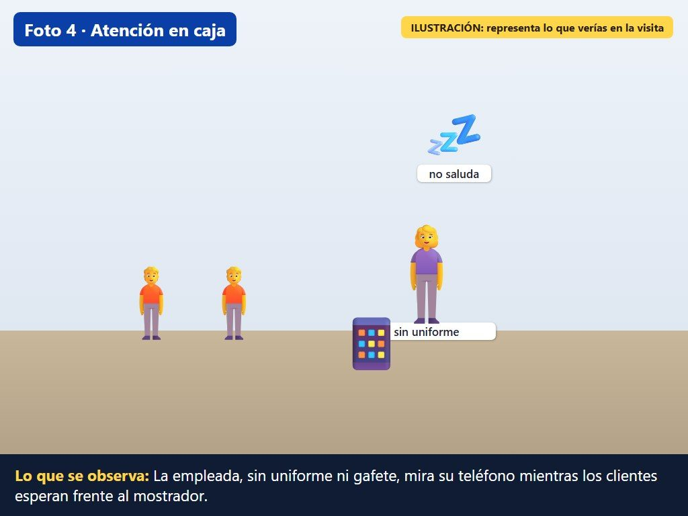
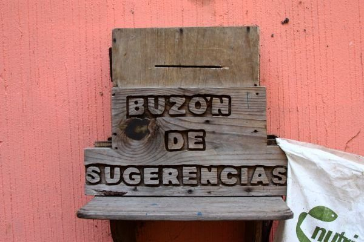
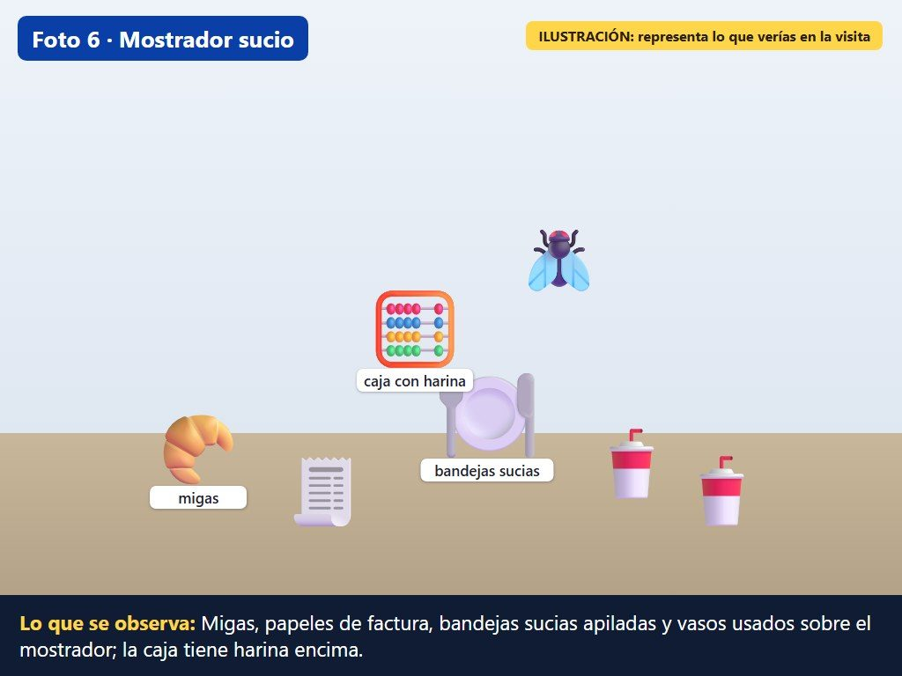

Caso 4: Panadería Pan de Casa
- Sector
- Panadería y repostería
- Ubicación
- La Vega
- Empleados
- 4 hombres y 6 mujeres
- Años en el mercado
- 6
- Persona de contacto
- Wilfredo Almonte, 39 años, socio-administrador
- Estrategia a implementar
- Mejora y Estandarización del Servicio al Cliente en la Empresa
1. Entrevista con el dueño
«El pan es bueno, eso nadie lo discute, pero los fines de semana la fila llega hasta la calle y la gente se va. Los muchachos atienden como pueden; cada uno saluda a su manera. Las quejas llegan por WhatsApp y se pierden entre los demás mensajes. Nunca hemos medido si los clientes quedan satisfechos, solo sé por las ventas. Quiero que el cliente se sienta bien atendido y que vuelva.»
2. Recorrido por la empresa (fotos)

Foto 1 · Frente al mostrador ilustración
Lo que se observa: Una fila larga de clientes espera en el mostrador y solo hay un empleado atendiendo; no hay sistema de turnos.
Guárdala en tu teléfono (mantén presionada la imagen) para subirla a la plataforma.

Foto 2 · Vitrina
Lo que se observa: Vitrina de cristal con panes y dulces variados; no se ven precios ni etiquetas.
Guárdala en tu teléfono (mantén presionada la imagen) para subirla a la plataforma.

Foto 3 · Rincón del local ilustración
Lo que se observa: Dos sillas rotas y una mesa apiladas contra la pared, con cajas encima; no hay asientos para los clientes.
Guárdala en tu teléfono (mantén presionada la imagen) para subirla a la plataforma.

Foto 4 · Caja ilustración
Lo que se observa: La empleada, sin uniforme ni gafete, mira su teléfono mientras los clientes esperan frente al mostrador.
Guárdala en tu teléfono (mantén presionada la imagen) para subirla a la plataforma.

Foto 5 · Junto a la caja
Lo que se observa: Buzón de madera con una ranura y la frase «Buzón de sugerencias», montado en una pared de color.
Guárdala en tu teléfono (mantén presionada la imagen) para subirla a la plataforma.

Foto 6 · Mostrador de atención ilustración
Lo que se observa: Migas, papeles de factura, bandejas sucias apiladas y vasos usados sobre el mostrador; la caja tiene harina encima.
Guárdala en tu teléfono (mantén presionada la imagen) para subirla a la plataforma.
3. Tu trabajo en la plataforma
Crea el caso con este nombre exacto (cambia el número por el de tu equipo). Así se califica tu trabajo automáticamente:
Panadería Pan de Casa - Equipo N
Estrategia que debes escoger: Mejora y Estandarización del Servicio al Cliente en la Empresa.
Documento que debes redactar con el Redactor (✨ Niko): Protocolo de servicio al cliente.
Herramientas de la plataforma para este caso:
- Diagnóstico de servicio al cliente
- Fotos
- Encuesta de satisfacción
- Planner
- Kit NPS
- Redactor con Niko: Protocolo de servicio al cliente
4. Carpeta de entregables (tu lista de cotejo)
Así lo harías en una asesoría real: al final entregas una carpeta con todo esto. Tu supervisora lo revisará y firmará la lista de cotejo.
- ☐ Solicitud del servicio y datos de la empresa (ficha completa)
- ☐ Objetivo del servicio definido
- ☐ Visita realizada con su ayuda memoria
- ☐ Fotos de evidencia con tu hallazgo escrito y confirmado
- ☐ Diagnóstico completo (más del 70 % de los criterios respondidos)
- ☐ Plan de trabajo con responsables y fechas
- ☐ Avance registrado en el cronograma (al menos 2 actividades)
- ☐ Kit de medición en Excel trabajado y subido a Documentos
- ☐ Documento de implementación (Word hecho con el Redactor)
- ☐ Informe final con mejoras y recomendaciones
- ☐ Carpeta comprimida con portada firmada, subida al Proyecto final (Unidad V) por una sola persona
Desarrollado por Johan Tapia, PhD